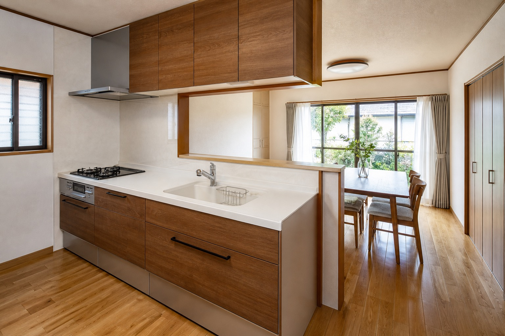
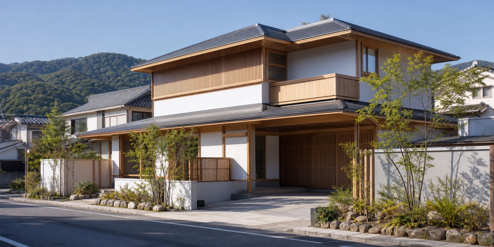
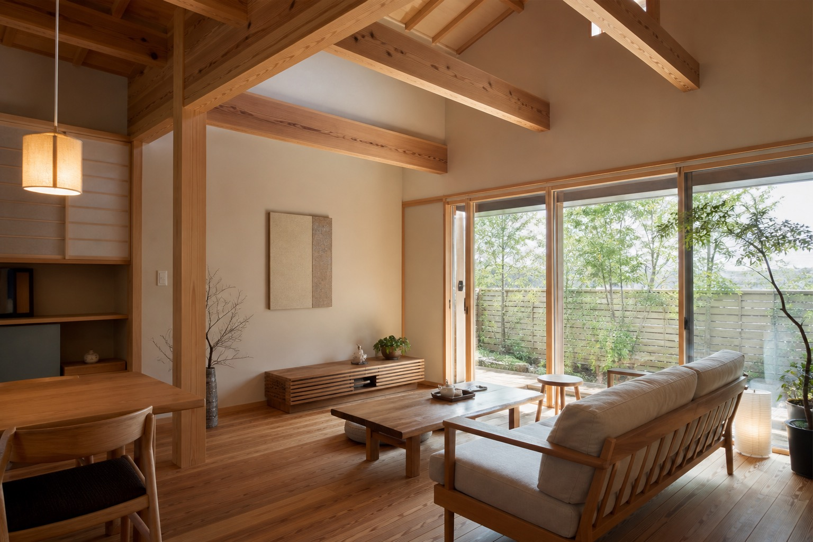
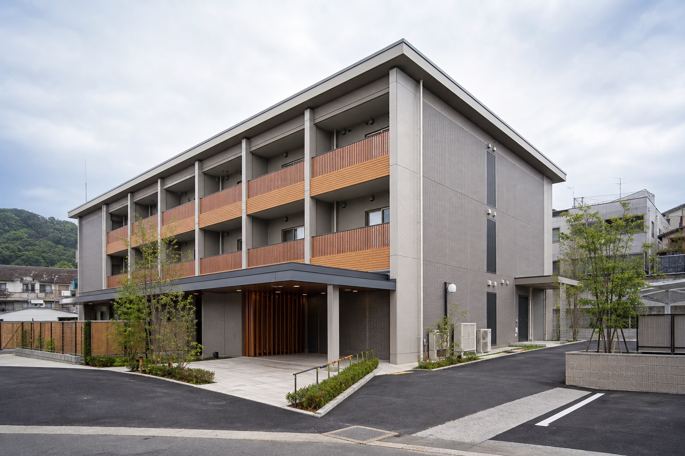
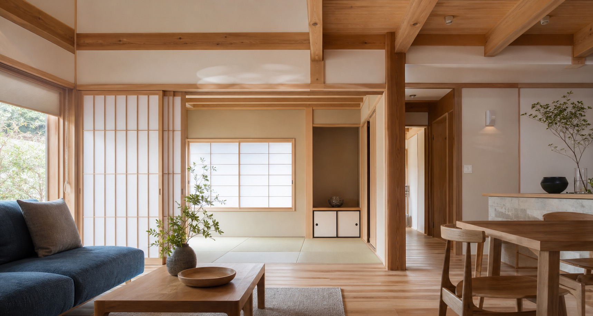

新築・建築一式
住宅、マンション、施設などの新築工事。公式サイト掲載の工事実績では、民間建築と公共建築の両方が確認できます。
このページは営業提案用サンプルです。公式サイトではありません。

仮画像Philosophy
公式サイトに掲載されている企業理念を軸に、約60年にわたり佐世保市内および近郊で建築工事を担ってきた会社らしさを、余白と写真で端正に見せます。
民間住宅の新築・改修だけでなく、自治体や法人の工事にも対応する工務店であることが伝わるよう、住宅会社風に寄せすぎない構成にしています。

仮画像Services
住宅、マンション、施設などの新築工事。公式サイト掲載の工事実績では、民間建築と公共建築の両方が確認できます。
クロス張替え、床張替え、和室から洋室、外壁、屋根、キッチン入替えなど。相談内容を分かりやすく入口化します。
市営住宅、学校、施設、外壁塗装などの実績掲載を踏まえ、法人・自治体向けにも信頼感が出る見せ方にしています。
Why Us
Works
以下は差し替え前提の仮画像です。実在の施工写真に置き換えることで、公共工事・新築・リフォームの幅をより強く訴求できます。

仮画像
仮画像
仮画像掲載確認済みの工事例: 田渕医院様玄関増築工事、佐世保市かじか住宅1番館建替工事、日野小学校校舎改築・長寿命化改修工事、西九州ガス様ビル外壁塗装工事など。
Contact / Recruit
公式サイトには問い合わせフォームと採用情報が確認できます。営業提案時は「住宅相談」と「求人問い合わせ」を同じフォーム内で選べるようにし、取りこぼしを減らします。
Company